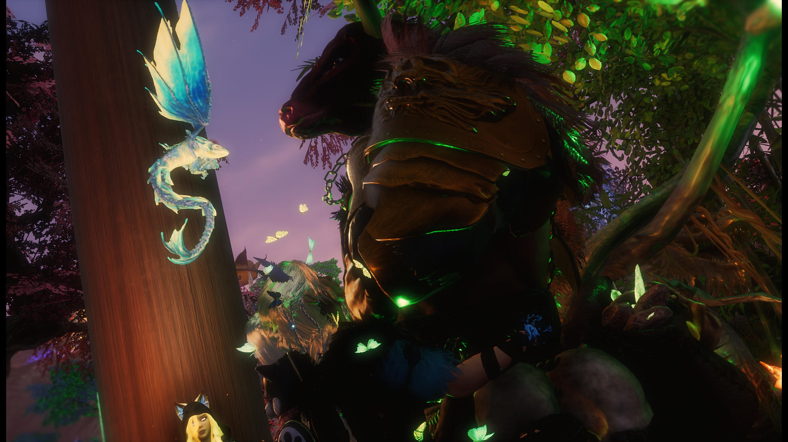

Characters of Axiom
Meet the unique individuals shaping our world

Thorne
Master Warrior
A battle-hardened veteran whose blade has tasted the blood of countless beasts. Thorne serves as Axiom's guardian, training new adventurers in the art of combat.
Lyra
Enchantress
With powers drawn from ancient knowledge, Lyra crafts enchantments that can turn the tide of battle. Her rare talents are sought by adventurers from across the realm.
Kaelen
Explorer
Always found on the frontier of the known world, Kaelen has mapped more lands than any other in Axiom. His knowledge of hidden paths is invaluable to the community.

Serena
Shrine Keeper
Dedicated to preserving and restoring the sacred shrines scattered across the realm, Serena communes with ancient powers to maintain balance in Axiom.